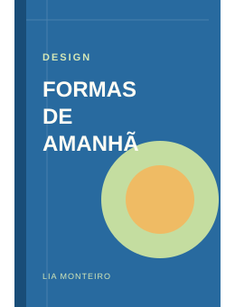

Design
Baixar prévia fictícia
Formas de amanhã
Lia Monteiro
Saiba mais
Uma estudante de design explora como pequenas escolhas visuais podem tornar os espaços da cidade mais acolhedores.
Livro e autora fictícios · prévia para demonstração